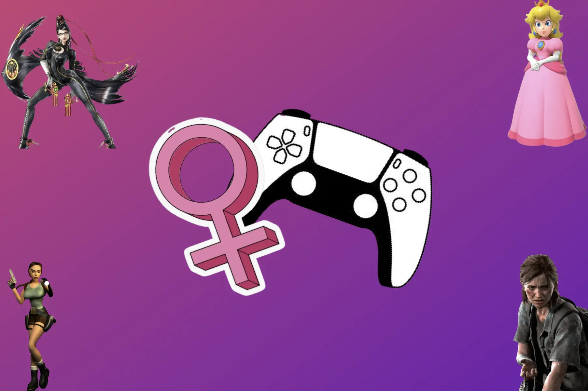

Kvinder og videospil
Videospil har en lang og kompleks historie, men siden begyndelsen af 1980’erne har kvindelig repræsentation ofte manglet. I mange år blev kvindelige karakterer primært skabt for at tiltrække mandlige spillere, som blev tiltrukket af seksualiserede kroppe, hvor kvindekarakteren yderligere ofte blev reduceret til den klassiske figur, der skulle reddes. Først i de senere år er der kommet større fokus på at udvikle kvindelige karakterer med dybde og selvstændige roller i fortællingerne. Dette sker først nu på trods af, at omkring 48 % af dem, der identificerer sig som kvinder, er gamere.